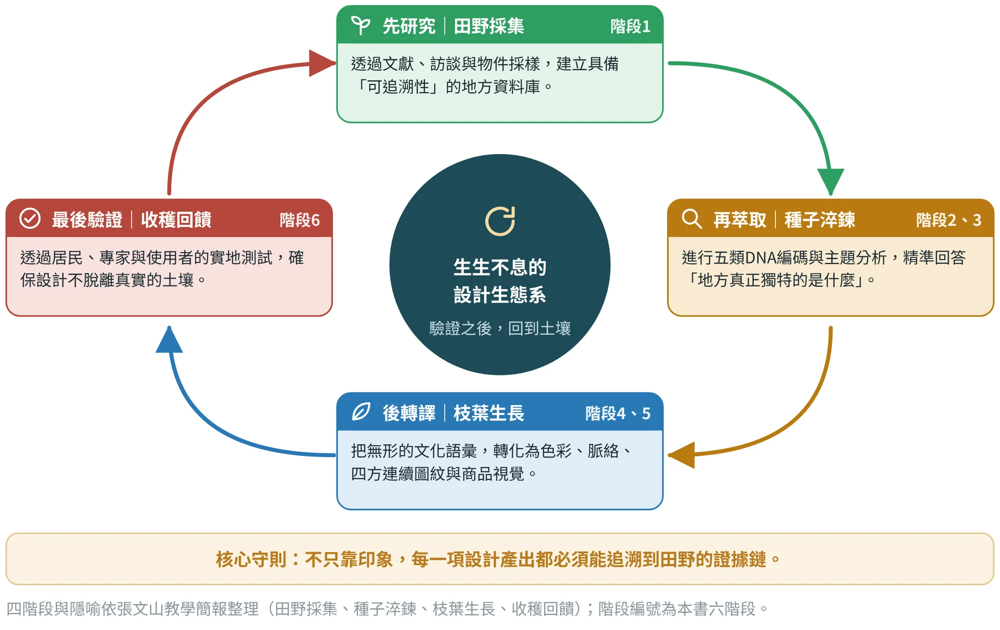
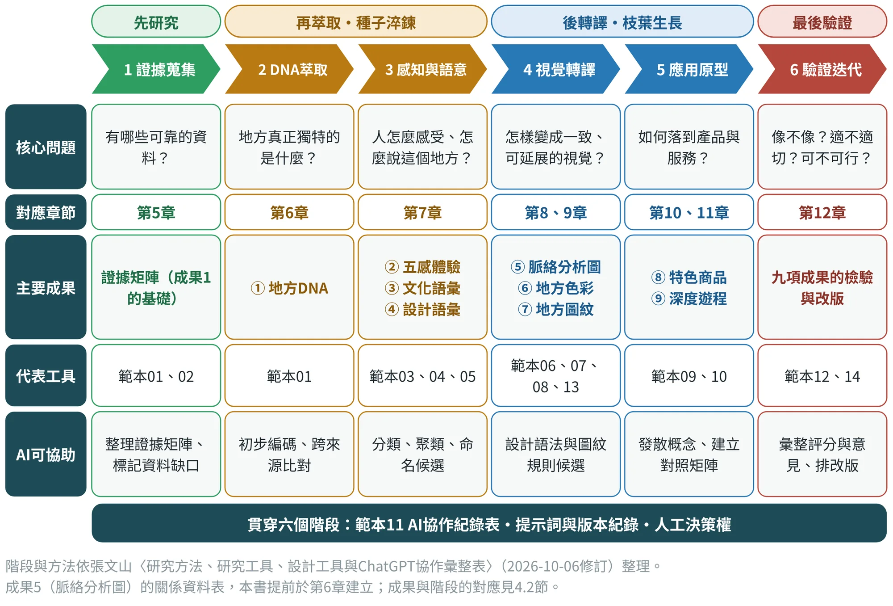
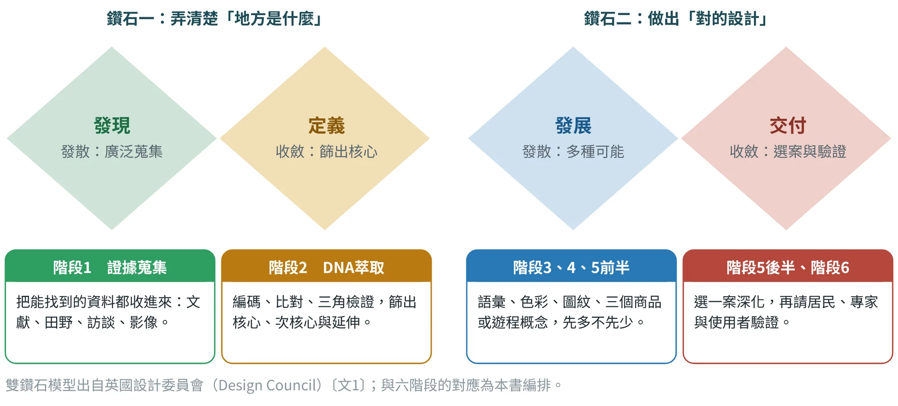
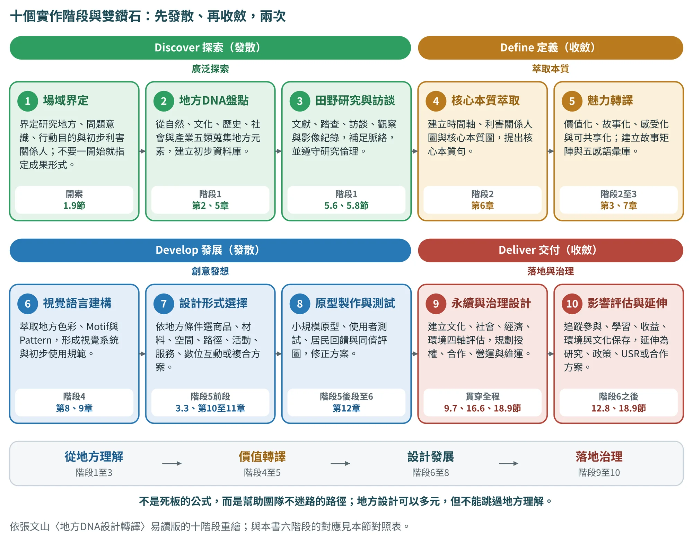
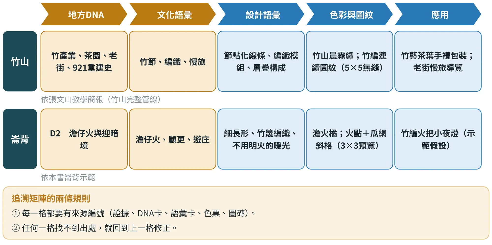
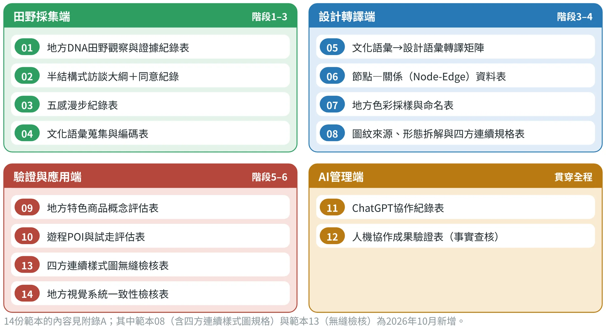

方法論全景
六個階段、九項成果、十四份工具與AI協作

4.1設計生態系：一圈四步，驗證之後回到土壤#
第3章的三階段（DNA、魅力、設計）告訴我們每個階段在做什麼；這一章要回答「具體怎麼做」。張文山把整套方法比喻為一個「生生不息的設計生態系」（圖4.1）：像植物生長一樣，先到田野採集養分，再淬鍊出種子，然後長出枝葉，最後結出果實，而果實的回饋又回到土壤，成為下一輪的養分。

- 先研究（田野採集）：建立具備「可追溯性」的地方資料庫。不靠印象，靠證據。
- 再萃取（種子淬鍊）：把資料編碼成DNA，並進一步轉成感官、語彙等可設計的詞彙。
- 後轉譯（枝葉生長）：把語彙變成色彩、脈絡、圖紋，再長成商品與遊程。
- 最後驗證（收穫回饋）：讓居民、專家與使用者來檢驗，並把結果帶回前面的階段。
這個循環有兩個重點。第一，順序不能倒：沒有證據就萃取，萃取的是想像；沒有語彙就畫圖，畫的是元素。第二，它是循環而不是直線：驗證的結果可能讓你回到DNA判讀、回到POI的取捨，或回到概念修改。每一次回頭，都是方法的一部分，不是失敗。
4.2六個階段、九項成果：一張全景圖#
為了讓每週有明確的產出，本書把四個階段再細分成六個工作階段（圖4.2）。這張圖是全書最重要的一張圖，建議影印下來貼在工作桌前：往下讀每一欄，是每個階段要回答的問題、對應的章節、要交的成果、可用的工具，以及AI可以協助的地方。

下表（表4.1）把六個階段的方法與產出說得更具體，並附上張文山在教學中使用的竹山示例，讓你看到每個階段「在真實場域大概長什麼樣」。
| 階段 | 建議方法 | 主要產出 | 竹山示例 |
|---|---|---|---|
| 1證據蒐集 | 文獻／檔案研究、田野觀察、訪談、照片／聲音／物件採樣 | 可追溯的地方資料庫 | 把竹、茶、老街、921等資料整理為來源表，並列出缺少的居民與照片證據 |
| 2 DNA萃取 | 五類DNA編碼、主題分析、利害關係人與地方資產盤點 | 回答「地方真正獨特的是什麼」 | 將竹產業、信仰、開墾、重建等分入五類DNA，並標記支持強度 |
| 3感知與語意 | 五感民族誌、感官地圖、文化語彙與設計語彙聚類 | 把地方經驗轉成可設計的詞彙與元素 | 竹藝工坊與老街：把視聽觸嗅味紀錄轉成五感地圖與文化語彙候選 |
| 4視覺轉譯 | 脈絡圖、色彩系統、地方圖紋、四方連續樣式圖 | 一致且可無縫延展的地方視覺語法 | 竹節、編織、河谷→節點化線條、編織模組、層疊構成；再建立最小單位紋樣與四方連續樣式圖 |
| 5應用原型 | 特色商品、體驗遊程、X720情境建置 | 把地方DNA落到產品與服務 | 竹藝＋茶＋慢旅→3個伴手禮概念＋1套遊程草案，逐項追溯DNA |
| 6驗證迭代 | 居民／專家評估、使用者測試、概念測試、前後比較 | 檢查真實性、可理解性、吸引力與可行性 | 把「像不像竹山、適切、吸引、可行」的評分轉成改版矩陣 |
九項成果在原表中依序為：地方DNA、五感體驗、文化語彙、設計語彙、脈絡分析圖、地方色彩／命名／色碼、地方圖紋與四方連續樣式圖、地方特色商品、地方深度體驗遊程。原表將脈絡圖列在視覺轉譯階段；因為關係資料表需要在選定主題軸之前完成，本書把它的第一步（Node-Edge資料表）提前到第6章，圖面整理則留到成果集中時完成。
4.3雙鑽石：每個階段都是「先發散、再收斂」#
六個階段不是六道獨立的工序，而是沿用設計領域常用的「雙鑽石」思維（圖4.3）：先擴大視野，再聚焦決策；然後再擴大一次，再聚焦一次〔文1〕。

- 第一個鑽石弄清楚「地方是什麼」：階段1盡量多收資料（發散），階段2用三角檢證與四道檢驗篩出核心（收斂）。
- 第二個鑽石做出「對的設計」：階段3到5前半盡量多產出語彙、色彩、圖紋與三個概念（發散），階段5後半選一案深化、階段6請人驗證（收斂）。
「先多不先少」是這個思維最好用的一條規則：在發散期，不要急著刪；在收斂期，一定要有判準，而且判準要寫下來（第5章的覆蓋檢查、第6章的層級、第10章的概念評分，都是收斂用的判準）。
十個實作階段：把雙鑽石展開成每一步的工作清單
六個階段是全書的工作座標，告訴你每週交什麼成果；作者的易讀版另有一條更細的路徑，把整個方法拆成十個實作階段（圖4.4），分別落在雙鑽石的四個區段：探索（Discover）、定義（Define）、發展（Develop）與交付（Deliver）。它不是另一套方法，而是同一套方法的工作清單版：團隊在任何時間點，都能指出自己走到第幾步、下一步要補什麼。

| 實作階段 | 要做什麼 | 對應本書階段 | 主要成果與工具 | 本書位置 |
|---|---|---|---|---|
| 1 場域界定 | 界定研究地方、問題意識、行動目的與初步利害關係人；不要一開始就指定成果形式 | 開案 | 一頁任務書、研究邊界、提示詞U5 | 1.9節 |
| 2 地方DNA盤點 | 從自然、文化、歷史、社會與產業五類蒐集地方元素，建立初步資料庫 | 階段1 | 證據矩陣、五類DNA對照 | 第2、5章 |
| 3 田野研究與訪談 | 以文獻、踏查、訪談、觀察與影像紀錄補足脈絡，並遵守研究倫理 | 階段1 | 田野觀察與訪談紀錄、同意紀錄（範本01、02） | 5.6、5.8節 |
| 4 核心本質萃取 | 建立時間軸、利害關係人圖與核心本質圖，提出核心本質句 | 階段2 | DNA證據表、DNA卡、脈絡分析圖 | 第6章 |
| 5 魅力轉譯 | 價值化、故事化、感受化與可共享化；建立故事矩陣與五感語彙庫 | 階段2至3 | 魅力主題與價值主張、五感與語彙 | 3.2節、第7章 |
| 6 視覺語言建構 | 萃取地方色彩、Motif與Pattern，形成視覺系統與初步使用規範 | 階段4 | 地方色彩、四方連續樣式圖、視覺手冊 | 第8、9章 |
| 7 設計形式選擇 | 依地方條件選擇商品、材料、空間、路徑、活動、服務、數位互動或複合方案 | 階段5前段 | 三個概念與評分 | 3.3節、第10至11章 |
| 8 原型製作與測試 | 小規模原型、使用者測試、居民回饋與同儕評圖，修正方案 | 階段5後段至6 | 原型、測試紀錄、改版矩陣 | 第12章 |
| 9 永續與治理設計 | 建立文化、社會、經濟、環境四軸評估，規劃授權、合作、營運與維運機制 | 貫穿全程 | 四軸評估表、視覺手冊、治理五層面 | 9.7、16.6、18.9節 |
| 10 影響評估與延伸 | 追蹤參與、學習、收益、環境與文化保存，延伸為研究、政策、USR或合作方案 | 階段6之後 | 前後比較、迭代紀錄、移交與研究問題 | 12.8、18.9節 |
十個階段依張文山〈地方DNA設計轉譯：從地方知識萃取到永續設計實踐的方法論〉（易讀版，2026年7月）整理；與六階段的對應為本書編排。
用這張對照表時，有兩點要留意。第一，十個階段不是死板的公式，而是一條幫助團隊不迷路的路徑：地方設計可以多元，但不能跳過地方理解；創意可以自由，但必須能被地方脈絡辯護；成果可以漂亮，但必須能被使用與維持。第二，第9階段標示為「貫穿全程」，因為永續與治理不是最後才補的章節：在第1、2階段，就應該把環境、社會、產業與治理的問題放進證據矩陣（16.5節）；到了第6階段，視覺資產就要有初步的使用規範（9.7節）。
4.4九項成果與最低成果證據包#
九項成果是這門課的主要產出。為了避免「做得漂亮卻說不出依據」，每一項都有一個「最低成果證據包」：交作業時，至少要附上這些東西，才算完成（表4.3）。
| 成果項目 | 章節 | 最低成果證據包 |
|---|---|---|
| ① 地方DNA | 第5、6章 | 五類DNA證據表＋3–5位關鍵受訪者或代表性文本＋照片／地圖證據＋DNA層級與來源註記 |
| ② 五感體驗 | 第7章 | 至少1條感官漫步紀錄＋五感地圖＋感官強度與情緒資料＋3個以上可設計觸點 |
| ③ 文化語彙 | 第7章 | 文化語彙來源清單＋編碼與分群規則＋核心語彙10–20項＋居民或專家檢核 |
| ④ 設計語彙 | 第7章 | 文化語彙→設計語彙對照矩陣＋造型、色彩、材質示例＋辨識度與適切性評估 |
| ⑤ 脈絡分析圖 | 第6章 | 節點—關係資料表＋可讀的脈絡圖＋關鍵轉譯機會點註記 |
| ⑥ 地方色彩 | 第8章 | 每個色彩的採樣來源＋名稱＋RGB／CMYK／HEX＋主、輔、強調色角色＋居民語意驗證 |
| ⑦ 地方圖紋與四方連續樣式圖 | 第9章 | 來源照片→抽象化步驟→線稿→黑白稿→彩色稿→最小單位紋樣→四邊對位規則→3×3與5×5無縫預覽＋散點、連綴、重疊組織說明＋至少3種實際應用示意 |
| ⑧ 地方特色商品 | 第10章 | 3個概念方案＋需求與競品依據＋1案深化＋商品與包裝模擬＋概念測試結果；若使用圖紋，另附最小單位、無縫預覽與實際版型應用 |
| ⑨ 深度體驗遊程 | 第11章 | POI清單＋路線圖＋Journey Map＋服務藍圖＋試走紀錄＋X720平台模擬 |
證據包內容依張文山〈研究方法、工具彙整表〉各成果的「建議最低成果證據包」。後面每一章的末尾，都會再列出該章的證據包，方便勾選。
4.5追溯矩陣：讓所有成果長得像同一個地方#
九項成果各自完成還不夠，它們必須共享同一套DNA與設計語彙。張文山在品質規範中要求建立「DNA → 文化語彙 → 設計語彙 → 地方色彩／圖紋 → 四方連續樣式圖 → 應用」的追蹤矩陣。圖4.5用竹山與崙背兩個案例示範這張矩陣的樣子。

追溯矩陣是整本書最簡單、也最有用的檢查工具。它有三個用途：第一，在期中與期末審查時，指導老師可以順著一列往右讀，快速判斷設計有沒有「斷線」；第二，在小組分工時，大家可以看到自己負責的一格，接在前後哪一格；第三，當居民問「這為什麼是這個顏色」時，你可以立刻回到上一格回答。
4.614份工具範本：帶著它們走進田野#
整套方法有14份工具範本（圖4.6），分成四類：田野採集端、設計轉譯端、驗證與應用端，以及AI管理端。簡報中的一句話說得好：「拿著這份工具包走入田野，讓地方的故事，透過精準的設計轉譯被世界看見。」

其中兩份是2026年10月新增的：範本08把四方連續樣式圖的規格（最小單位、四邊對位、組織形式、重複預覽）納入圖紋成果鏈；範本13則是無縫檢核表，要求用尺寸與座標驗證，而不是「看起來像無縫」。AI管理端的兩份範本（11、12），是這本書「人機協作可重現、可審查」的基礎，第三篇會詳細說明。
4.7AI協作：先請AI幫你排工作計畫#
在開始田野之前，可以先請AI依「先研究、再萃取、後轉譯、最後驗證」幫你排出工作計畫。注意提示詞裡的兩個限制：只依據你提供的內容；哪些決策必須由人確認，要明白標出來。
請根據我提供的地方資料，依「先研究→再萃取→後轉譯→最後驗證」建立工作計畫。每一步列出輸入資料、分析方法、主要產出、查核點與下一步所需資料；只依據我提供的內容，未知處標「待補資料」，並標示哪些決策必須由居民／專家／研究者人工確認。
提示詞出自張文山〈AI協作Prompt增補版〉（2026-10-06修訂，第三版-2）。將你的場域資料與限制（時間、人力、預算）一併貼入，效果更好。